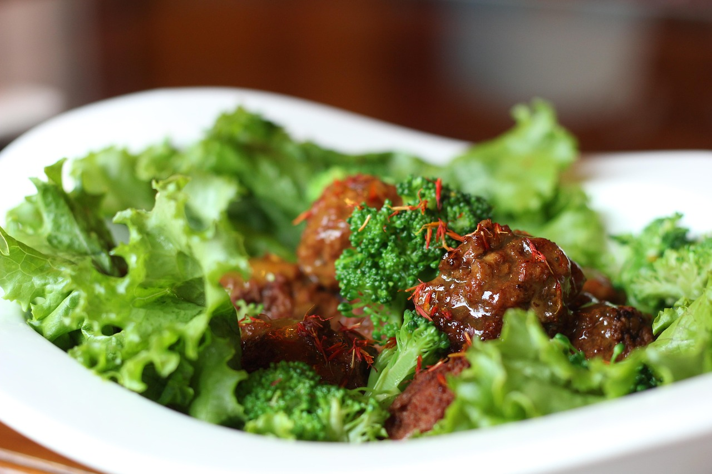

Meatballs

A different take on meatballs
So, here in Mexico we have a vary specific way of making meatballs. We stuff them with rice, and serve them in a light tomato broth.
And don't get me wrong, they're great! This meatballs recipe, however, is, in my opinion, much more flavorful, but still manages to capture the charm of the original recipe.
Here's how we make them.
Ingredients:
- Ground beef.
- Onion.
- Diced tomatoes.
- Tomato puree.
- Paprika.
- Powdered garlic.
- Salt.
- 1 egg.
- Breadcrumbs.
- Shredded cheese.
Steps:
- Fry the onion in a pan with oil.
- Add the onion to the ground beef.
- Add the spices to the ground beef.
- Make little balls with the meat.
- Fry the meatballs.
- Once fried, add tomatoes, salt, tomato puree and garlic.
- Let it simmer until the sauce thickens.
- Add shredded cheese.
- Wait for the cheese to melt.
- Serve.
Home